Abstract
Slow growth rates are considered a hallmark of Mycobacterium tuberculosis (Mtb) and have been historically associated with persistence and subsequent drug tolerance. Despite the fundamental role intracellular growth plays in the pathogenesis of Tuberculosis (TB), approaches that define intracellular growth rates have remained unfeasible. Thus, we developed a high-throughput, live-cell imaging approach to quantify Mtb replication within human macrophage populations at high spatiotemporal, single-cell resolution. Unexpectedly, we discovered fast-growing intracellular Mtb populations with doubling times below 10 hours. Importantly, when treated with first-line antibiotics, these intracellular fast-growing subpopulations remained. To validate this in vivo, we developed a mouse model of tuberculosis featuring a Mtb-Timer fluorophore that reports replication activity. Single-cell analysis revealed a strong correlation between heavily-burdened host cells and Mtb populations with heightened replicative activity. These data identify fast-growing intracellular bacteria as a mechanism of antibiotic evasion and challenges the prevailing dogma that attributes antibiotic tolerance to bacterial dormancy.
Introduction
Tuberculosis (TB) has been one of the most devasting infectious diseases throughout human history, affecting humanity for over 15,000 years (1) and resulting in 1.23 million deaths in 2024 (2). The current chemotherapy regimen for TB requires at least four months and four antibiotics to cure the disease (3). The reasons behind this prolonged treatment duration and multi-drug requirements are multifactorial and remain poorly understood (4-6).
Mycobacterium tuberculosis (Mtb), the causative agent of TB, can adopt an intracellular lifestyle and replicate within host cells during infection (7). In the host, Mtb faces diverse intracellular and extracellular microenvironments that results in single-cell phenotypic variability (8, 9). Compelling evidence indicates a host cell contribution to antibiotic accumulation and efficacy (10-14), but the underlying mechanisms remain poorly defined.
Mtb is canonically defined as a slow growing bacterium, characterized by bulk population doubling times of approximately 18-24 hours (15). These slow or non-growing bacterial phenotypes are frequently associated with the ability of Mtb to evade antibiotic treatment (16-18). Previous in cellulo studies have reported bulk intracellular Mtb doubling times of 21, 26-28, and 24.7 hours, respectively (12, 19, 20). An in vivo study reported computationally modelled Mtb doubling times of 48 hours extracellularly and 24 hours intracellularly (21). However, these metrics obscure significant underlying heterogeneity and only recently various single cell studies have begun to report a wide range of intracellular and extracellular replication behaviours. These single-cell approaches revealed that individual Mtb bacilli have the capacity to replicate significantly faster than the canonical average, with doubling times as short as ~17 hours in vitro or in cellulo (20, 22, 23). However, how these discrete replication phenotypes can potentially impact antibiotic efficacy against intracellular Mtb remain elusive.
Antibiotic efficacy (24) has been primarily determined using parameters derived from in vitro planktonic cultures such as minimal inhibitory and minimal bactericidal concentrations (25) that neglect the host cell contribution towards antibiotic efficacy (26). Single-cell image-based in vitro studies of antibiotic responses address the highly heterogenous nature of Mtb infection (27, 28), but they are biased by nutrient-rich and aerobic culture conditions. On the other hand, single-cell image-based in cellulo studies overcome bulk determinations and mimic physiological intracellular environments (23, 29-32), but are often limited in spatial and temporal resolution.
To address these challenges, we developed a high-content imaging platform designed to monitor Mtb intracellular replication at the single-macrophage level. This approach combines high spatiotemporal resolution with multi-day acquisition, enabling the precise quantification of dynamic and transient single-cell doubling times. To ensure physiological relevance, we implemented this workflow in human pluripotent stem cell-derived macrophages (iPSDM) infected with Mtb H37Rv wild-type, a well characterised and genetically defined human cell model of infection (33, 34). We also infected iPSDM with a mutant of Mtb which lacks the region of difference 1 (RD1) genomic locus. Mtb ΔRD1 localises in membrane-bound compartments and is restricted within human macrophages and was thus used to validate attenuated intracellular growth (35). We profiled the standard first-line anti-TB regimen of Pyrazinamide (PZA), Isoniazid (INH) and Rifampicin (RIF) on this model system, representing three distinct mechanisms of action: intracellular acidification and membrane energetics; cell wall synthesis and bacterial transcription respectively (36-38). We discovered that a subpopulation of infected human macrophages harboured exceptionally fast-growing Mtb populations. Moreover, we show that these fast-growing intracellular Mtb populations evade antibiotic treatment in cellulo. Finally, to validate these phenotypes in vivo, we used a fluorescent Mtb-Timer reporter to infect TB susceptible mice combined with single cell analysis in the lungs. We show that these growing populations remain during antibiotic treatment, likely representing a phenotypically and clinically relevant reservoir of fast-growing bacteria that evades antibiotic treatment.
Results
An image-based pipeline to study Mtb replication in single human macrophages with high spatiotemporal resolution yields heterogenous growth profiles.
We developed a high-content, live-cell imaging approach that allows for the monitoring of Mtb replication in large populations of infected macrophages (Fig. 1A). This system consists of human iPSDM expressing EGFP from an AAV locus33 infected with Mtb H37Rv expressing fluorescent E2-Crimson (Fig. 1B). Using this biological model, we established an imaging pipeline that allows for 2-channel imaging of Mtb-infected macrophages in 96-well plates, with 9 overlapping fields of view per well, across 3x 2 µm z-slices, for up to 75 h at 30/60 min frame rates, after an initial 24 h set-up of the infection (Fig. 1C-E, Movie S1). This control assay was repeated across N = 4 biological replicates.
In addition to this control scenario, macrophages were also treated with pre-determined EC50 and EC99 concentrations of first line antibiotics: PZA, INH and RIF, to quantify the single-cell dependency of antibiotic efficacy. After establishing a robust image tiling, segmentation and tracking strategy (Fig. 1F-G), we were able to reliably track Ncell = 18,152 macrophages over a minimum period of 35 h (Fig. 1H). A subsequent analysis of intracellular Mtb growth trajectories revealed a heterogeneity in Mtb replication dynamics. Some macrophage tracks showed a high intracellular Mtb load (magenta lines, Fig. 1H), whilst others harboured only low levels of Mtb intracellular populations (green lines Fig. 1H).
In these single-cell growth profiles, a subset of intracellular populations showed near instantaneous increases in intracellular Mtb burden, warranting further investigation. At the infected macrophage level, we observed three clear phenotypes related to the fast-growing Mtb: (i) Intracellular growth of Mtb (Fig. S1A, Movie S3); (ii) Extracellular uptake of Mtb, where rapid increases in intracellular burden resulted in increased single cell Mtb signals that were not associated with intracellular growth (Fig. S1B, uptake highlighted with a white arrow, Movie S3); and (iii) Intercellular transfer of Mtb between neighbouring macrophages, where sudden increases in intracellular burden yielded rapid growth rates not associated to intracellular replication (Fig. S1C, transfer highlighted with a white arrow, Movie S3).
Incidences of extrinsic Mtb growth, particularly intercellular transfer of populations of Mtb, were largely attributable to macrophage cell death20,35, however without a cell death marker we were unable to quantitatively investigate this effect further. To exclude the increase in intracellular signal associated with extracellular uptake and intercellular transfer in any further analysis, we defined these two processes as belonging to an “extrinsic Mtb growth” phenotype, in contrast to truly “intrinsic” intracellular Mtb growth.
In order to further assess Mtb growth dynamics, we fitted a locally weighted scatterplot smoothing (LOWESS) model to the Mtb growth trajectories39. This approach allowed for the accurate quantification of growth dynamics by attenuating high-frequency noise from the intracellular Mtb measurements whilst retaining the underlying biological growth pattern. It also served as a quality-control metric for tracking performance, as erroneous tracking jumps or extrinsic Mtb growth events result in a poorly fitting coefficient of determination (R2) between the raw Mtb data and growth curve (Fig. S1B-C, shown in magnified graph ROI).
Using the R2 coefficient of determination as a ranking metric, we classified and isolated the extrinsic growth phenotypes using a human-in-the-loop approach, wherein a set of napari40 key-bindings were used to iterate over and label a corpus of single-cell video glimpses. We then used these manually curated labels to segregate the single-cell growth phenotypes according to whether they were wholly intrinsic, intracellular Mtb growth or extrinsic Mtb growth (Fig. S1D-H).
Of the total tracked macrophages, 57.1% (Ncell = 10,371) were infected, out of which 3574 macrophages exhibited no intracellular growth, 5065 macrophages exhibited minor growth and 1732 macrophages harboured doubling intracellular Mtb populations (Fig. S1D). We subsequently focused our growth rate analysis to these intrinsic, intracellular doubling populations for three main reasons: firstly, the metric of doubling time is already well established within the field of microbiology and it provides us with a comparison to previous bulk level studies; secondly, calculating growth rates from minor, non-doubling intracellular growth is inherently prone to stochastic signal noise fluctuations; and thirdly, the subset populations that possessed non-doubling or no measurable growth precluded a confident assessment of whether these bacteria were arrested due to acquisition time constraints. Out of the 1732 doubling instances of intracellular Mtb growth, manual classification of intrinsic versus extrinsic growth phenotypes resulted in a final corpus of 590 doubling instances that constituted the focus of our subsequent analysis.
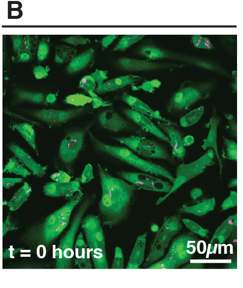
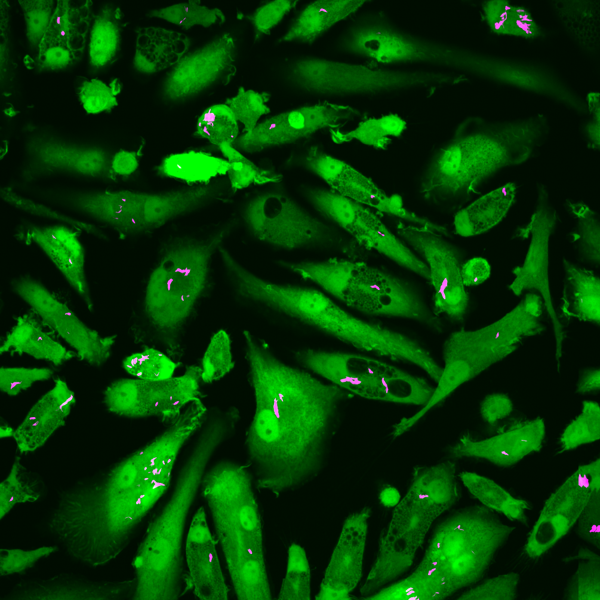
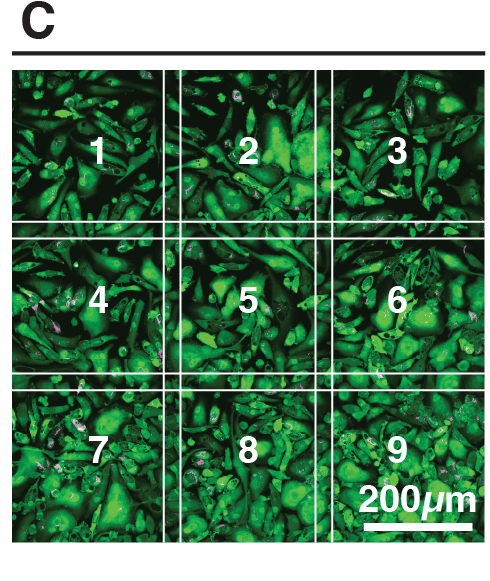

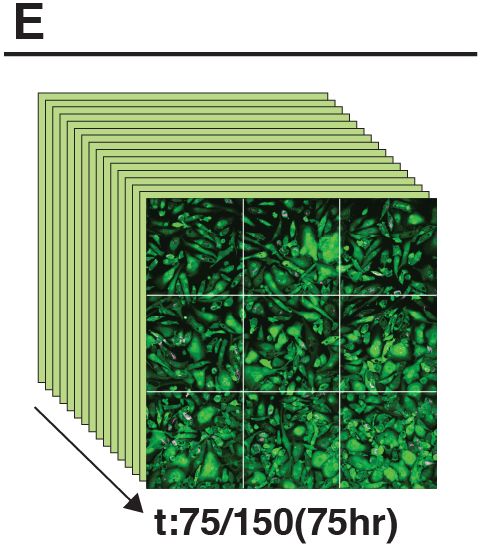
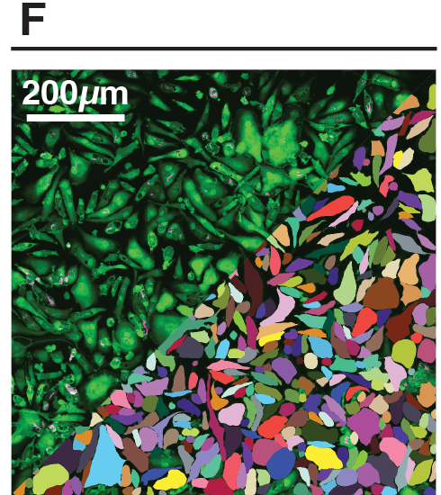
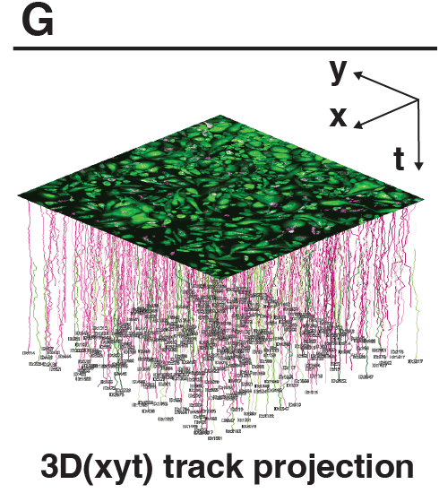
Single-cell quantification of intracellular doubling times reveals fast-growing intracellular Mtb evades antibiotic treatment.
Following this, we defined three distinct phenotypes based on our observed doubling times relative to literature values: normal growth (16-24 h, Fig. 2A, Movie S2), slow growth (≥24 h, Fig. 2B, Movie S2) and fast growth (≤16 h, Fig. 2C, Movie S2) (20, 22, 23). It is important to note that these phenotypes were often facultative and transient; a single macrophage could host an intracellular bacterial population that exhibits several distinct doubling times over the course of the acquisition (Fig. 2A-C, Fig. S1). To account for this, we distinguish between the number of unique host cells (Ncell) and the total number of measured doubling times (Ndt). Consequently, a period of rapid intracellular growth represented a specific measured event rather than an indefinitely maintained state of unrestricted growth. Initial bacterial burden showed no correlation with subsequent bacterial doubling times within individual macrophages (Fig. S2A).
Our analysis revealed that intracellular doubling times are broadly distributed, ranging from <10 h to >70 h (Fig. 2D). In untreated macrophages, Mtb WT displayed considerable heterogeneity (CV = 0.45, Table S1). While the distribution median of 25 h (Ncells = 245, Ndt = 402) encompasses the canonical 20-25 h doubling times reported in the literature, we observed a significant subpopulation (14%) replicating rapidly (<16 h doubling time), alongside a dominant fraction of slow-growing events (57%). Gaussian Mixture Modelling (GMM) confirmed that this distribution is bimodal rather than continuous (ΔBIC > 10) (41), consisting of a distinct "actively replicating" population centred around ~20 h and a slower population around ~45 h (Fig. S3).
This diversity also applied to the attenuated Mtb ΔRD1 mutant. As expected, Mtb ΔRD1 showed a reduced capacity for intracellular proliferation, with a median doubling time of 42 h and a sharp reduction in the total number of measurable doubling events compared to WT (Ncell = 83, Ndt = 87, Fig. S1E-F). However, the fast-growing phenotype remained in 11% of the population (Fig. 2D). Fisher's exact test (Table S2) confirmed that this proportion was statistically indistinguishable from the Mtb WT strain (p > 0.99), suggesting that the capability for this rapid intracellular growth may be independent of ESX-1 activity. There was also a concomitant reduction in the proportion of intercellular transfer in Mtb ΔRD1 when compared to Mtb WT (18.5% to 30.2%) as the Mtb ΔRD1 mutant does not trigger substantial cell death (35) (Fig. S1E-F, Fig. S2B).
We next examined how this heterogenous growth behaviour responded to antibiotic pressure. At the population level, treatment with PZA, INH and RIF resulted in a concentration dependent reduction in measurable doubling events (Fig. 2D, Fig. S1E, G). Moreover, a higher proportion of initially infected macrophages ending the acquisition uninfected (Fig. S2B) confirms antibiotic efficacy on a bulk scale. At EC50 concentration, RIF induced a marked shift toward slow growth (increasing from 57% to 86%), while PZA and INH profiles remained broadly similar to the untreated control (Fig. 2D). However, at high-dose EC99 concentration, the rare surviving doubling populations were significantly enriched for the fast-growth phenotype. This selection was most pronounced in RIF EC99, where the proportion of fast growers changed from 14% to 64% (Fig. 2D), confirmed as statistically distinct from all other conditions by pairwise Kolmogorov-Smirnov (KS) test (D = 0.56, p < 0.001 vs WT, Fig. S5). Pairwise Fisher's exact tests with Benjamini-Hochberg FDR correction confirmed a statistically significant enrichment of fast growing bacteria in both RIF EC99 (p < 0.0001) and INH EC99 (p < 0.01) compared to the untreated control (Table S2). Taken collectively, our single-cell analysis uncovers a subpopulation of bacteria that not only replicates faster than previously reported in vitro and in cellulo but is also paradoxically enriched under specific antibiotic conditions.
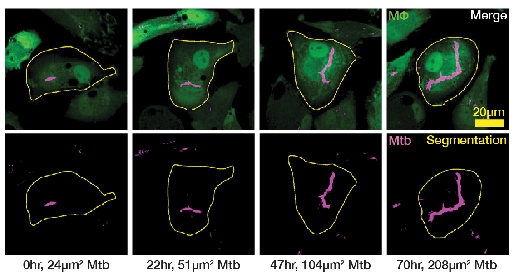
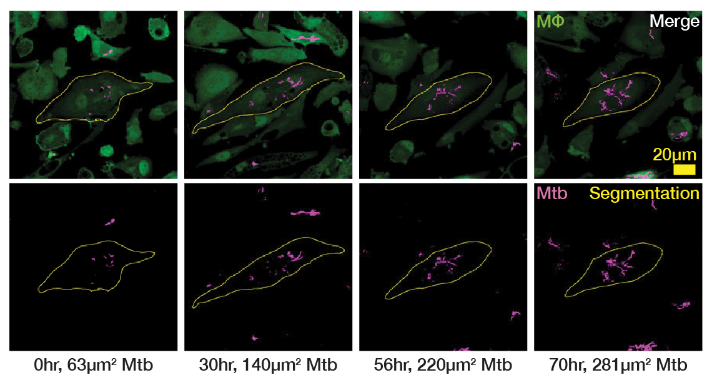
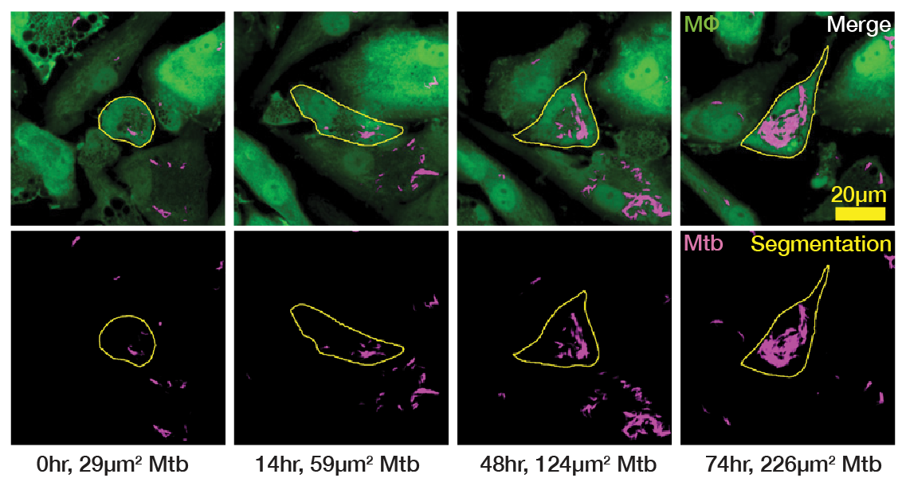
Fig. 2. Infected macrophage tracking and quantification reveals extremely variegated growth rates.
(A) Single cell example of normal doubling time (24 hours) of intracellular Mtb. Representative images (left) and LOWESS growth curve in green with the doubling points in grey dotted lines (right). (B) Single cell example of slow doubling time (66 hours) of intracellular Mtb. Representative images (left) and LOWESS growth curve in green with the doubling points in grey dotted lines. (C) Single cell example of fast doubling time (13 hours) of intracellular Mtb. Representative images (left) and LOWESS growth curve in green with dotted lines. The raw data is shown in magenta. (D) Box plots showing the distribution of intracellular doubling times for intracellular Mtb WT and Mtb ∆RD1.Intracellular growing Mtb populations are enriched under antibiotic pressure.
To validate the enrichment of the fast-growing subpopulation after antibiotic treatment, we used an independent approach based on a Mtb H37Rv strain that expresses the fluorescent reporter Timer (Mtb-Timer) (Campo-Pérez et al., in revision). This reporter measures bacterial growth dynamics through the green-to-red (GR) fluorescence ratio of the bacteria (Fig. 3A) 42,43. First, to validate the functionality of the Mtb-Timer reporter in vitro, we treated Mtb with the bacteriostatic antibiotic chloramphenicol (CHL). This treatment resulted in a reduction of green intensity, demonstrating the sensitivity of the reporter to changes in Mtb replication (Fig. S7A-D). Using flow-cytometry to analyse fluorescence intensity of Mtb in vitro, we observed a reduction in green intensity in INH and RIF, but not PZA treatment (Fig. S7E), consistent with data showing that PZA requires an intracellular microenvironment to achieve full efficacy 10.
Using an infection workflow similar to the high-content imaging approach (Fig. 1A), we measured green and red fluorescence of in cellulo Mtb released from infected iPSDM. Upon antibiotic treatment, we observed a shift of the GR ratio (Fig 3B). Using the GR ratio as a proxy for intracellular replication, we found that despite EC99 antibiotic treatment, a substantial number of bacteria maintained high GR ratios, indicating that a proportion of actively growing Mtb remained (Fig. 3C). Importantly, an in vitro Mtb-Timer analysis showed minimal retention of high GR ratio bacteria upon antibiotic treatment suggesting a host-driven component in the fast-growing phenotype of intracellular Mtb (Fig. S7C-D). INH treatment resulted in a shift toward higher fluorescence intensities in both green and red channels, consistent with INH-mediated cell wall inhibition where bacterial division is arrested but protein translation initially continues. A similar phenotype was observed under PZA treatment. In contrast, RIF treatment resulted in green-red distributions similar to the control but with a specific shift in the red channel towards higher intensity, agreeing with the RIF mechanism of blocking mRNA synthesis. Confirming the live cell imaging results, the most significant observation across all conditions was the presence of a tail of high GR ratio bacteria. Regardless of the antibiotic stress, this subpopulation confirms that a rare subset of bacteria remains metabolically active and capable of new protein synthesis. Altogether, these data show that even under EC99 antibiotic pressure, populations of growing intracellular Mtb are still present.
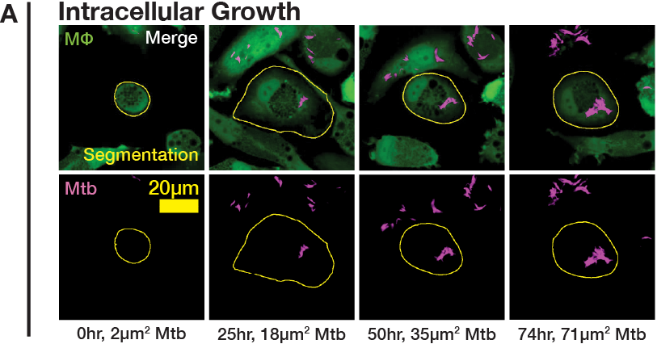
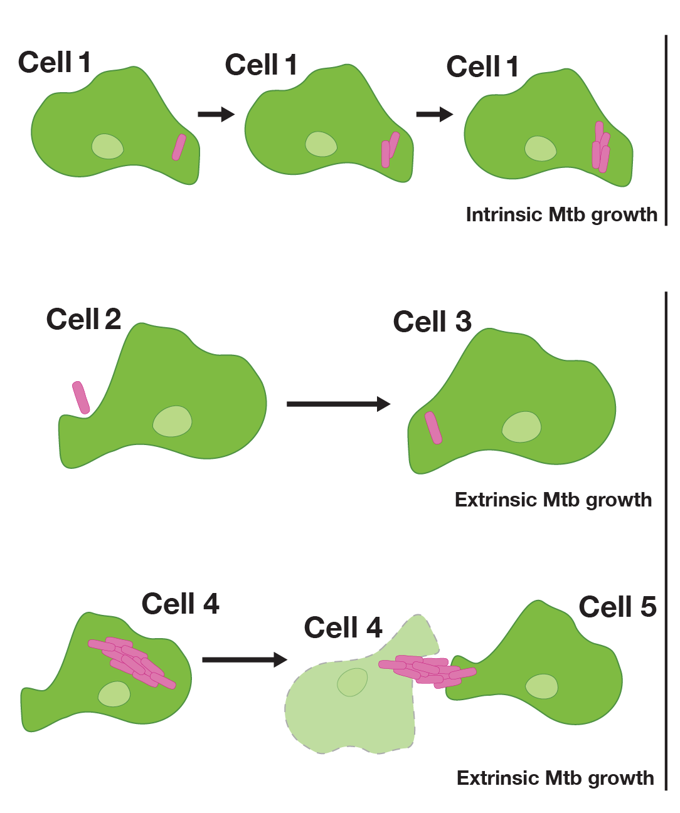
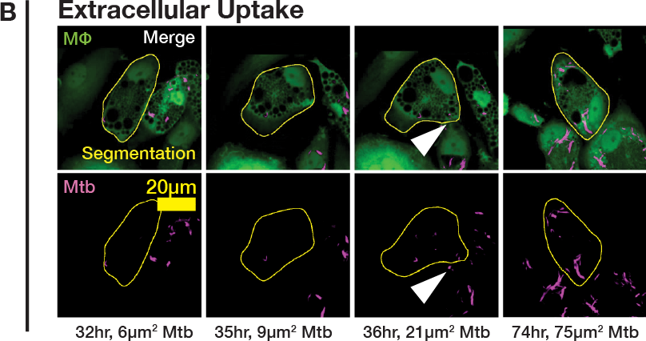
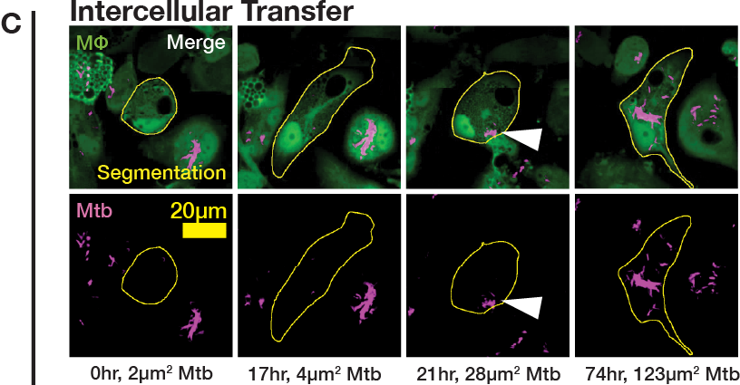
Fig. 3. Intracellular fast-growing Mtb is a distinct subpopulation of infected macrophages.
(A) Mtb population doublings of intracellular origin typically result in steady growth patterns well represented by the LOWESS growth model and subsequent R2 value. (B) Extracellular uptake of smaller populations of Mtb can result in an artificially quick doubling. (C) Intercellular transfer of larger populations of Mtb from neighboring cells results in more artificially quick doubling. (D) Distribution of Mtb doubling time separated by intrinsic versus extrinsic origin. (E) Sankey diagram illustrating how the proportion of each wild-type Mtb growth phenotype changes across the time-lapse. (F) The equivalent Sankey diagram for ΔRD1 reflects the mutants’ reduced capacity to cause cell death and subsequent inter-cellular transfer.Replicating Mtb subpopulations are associated with antibiotic evasion and treatment failure in vivo.
To confirm the fast growth phenotype, we next sought to validate these dynamics in vivo with Mtb-Timer. Based on our observations in cellulo, we hypothesised that the presence of fast-growing intracellular Mtb populations is responsible for poor antibiotic response in vivo. To investigate this, we infected C3HeB/FeJ mice, a susceptible model of TB disease (44, 45), with the reporter strain Mtb-Timer. After 56 days of infection, we treated the mice with vehicle, RIF or PZA for 3 weeks before collecting the lungs for Colony Forming Units (CFU) counting and high-resolution confocal imaging (Fig. 4A). Consistent with standard efficacy, both RIF (p < 0.01) and PZA (p < 0.001) treatment significantly reduced the total bacterial burden compared to vehicle controls as measured by bulk CFU counts (Fig. 4E, Table S3). As previously reported, PZA efficacy was highly heterogeneous (47), with a subset exhibiting poor control of infection as measured by CFU (Fig. 4E-F).
Strikingly, our single-cell analysis revealed that the bacterial populations surviving antibiotic treatment sustained replication that were either comparable to (RIF, p = 0.97) or significantly higher than (PZA, p < 0.05) those in the vehicle-treated controls (Fig. 4F, Table S4). This uncoupling of burden and replication was confirmed by a positive correlation between the GR ratio and the lung CFU across all conditions (Vehicle: r = 0.74, p = 0.023; RIF: r = 0.86, p = 0.003; PZA: r = 0.71, p = 0.034; Fig. 4G). Notably, in the antibiotic treated groups, the specific mice that failed to respond to therapy (particularly in PZA conditions) displayed the highest proportion of fast-replicating bacteria (Fig. 4G). Altogether, these findings show that growing intracellular Mtb populations are associated with antibiotic treatment failure in vivo.
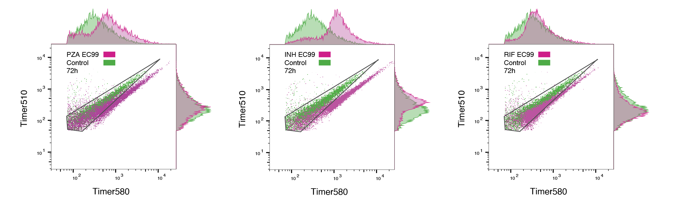
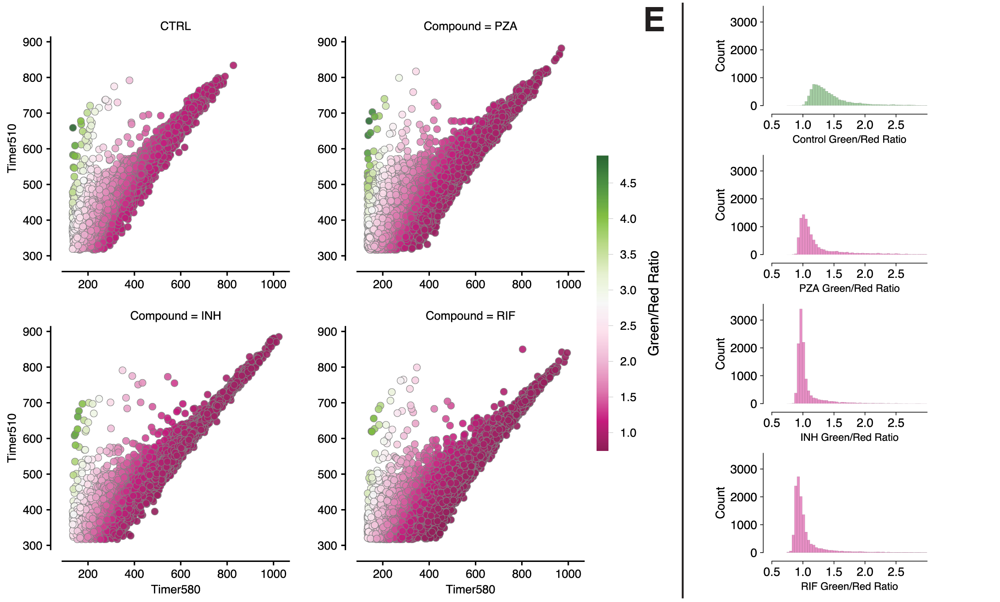
Fig. 4. Fast growing intracellular Mtb evade antibiotic treatment. (A) Timeline and experimental design of antibiotic-treated, Mtb-infected macrophages live-cell imaging. (B) Distribution of intracellular doubling times attributable solely to intrinsic, intracellular Mtb growth within host-macrophages. These doubling times are separated into control (untreated) wild-type Mtb, control (untreated) ∆RD1-Mtb and antibiotic-treated wild-type Mtb, with further subdivisions according to the concentration of antibiotics (EC50 and EC99). A Mann-Whitney U test accompanies these distributions, comparing the overall distribution of each condition to the wild-type control. The intracellular Mtb doubling times across PZA, INH and RIF treated macrophages exhibit heterogenous distributions that diverge further with increasing antibiotic concentrations. The proportion of fast, normal and slow growth phenotypes are also exhibited as percentages for each strain of Mtb and concentration of antibiotic. A Chi-squared (χ2) test accompanies these distributions, comparing the proportions of each growth phenotype in each condition to the wild-type control. (C) Visualization of the selective pressure that antibiotics exert on intracellular Mtb populations.
Discussion
Here, we reveal that Mtb has the facultative capacity to adopt a remarkably wide range of intracellular growth phenotypes that are relevant for antibiotic treatment. Whilst other approaches have previously described such heterogeneity in vitro, in cellulo and in vivo (12, 22, 23, 27, 48, 49), our approach is capable of tracking individual infected macrophage populations and quantifying intracellular Mtb growth rates in the relevant human macrophage host whilst also under antibiotic pressure. Macrophages harbouring fast-growing Mtb are not merely theoretical outliers but remain during the infection, as Mtb permissive macrophages have been reported in human TB (7) and mouse models of TB (15, 48). Our results agree with the observed intracellular growth of Mtb in animal models where the logarithmic increase of bacteria does not always match a slow growth rate (44).
Antibiotic phenotypic tolerance is conventionally associated with the slow (or non) growth of Mtb and other bacteria under host environmental stress (50). Unexpectedly, we show that a distinct subpopulation of fast-growing Mtb survives and is specifically enriched under antibiotic pressure, likely without developing resistance mutations and mostly owing to phenotypic changes triggered by the intracellular milieu (51, 52). Our data agrees with reports in E. coli, where fast-growing resilience has been postulated as a mechanism of antibiotic escape in vitro (53, 54). It is possible that either macrophages or rapidly replicating Mtb fail to internalise effective concentrations of antibiotics (53). Alternatively, infection may enhance the efflux capacity of the host macrophages or intracellular Mtb, subsequently reducing antibiotic accumulation (55).
Several factors lead to RIF tolerance, heteroresistance, or persistence (56). Our observation that RIF EC99 treatment expands the phenotypic variance (CV = 0.90) suggests a "bet-hedging" strategy, where the bacteria access a high-risk, high-reward state of rapid replication to survive. Our data raise the possibility that fast-replicating Mtb populations might evade RIF by reducing the accessibility or binding efficacy of RIF to RNA polymerase due to heightened transcriptional activity. Moreover, certain subpopulations of Mtb can continue to grow and divide in the presence of RIF due to RIF-induced upregulation of the rpoB gene (57). Our findings in Mtb align with mathematical models predicting that bactericidal antibiotics targeting fast-growing bacteria leave a small but largely viable bacterial population (58).
INH inhibits mycolic acid synthesis and predominantly acts on replicating bacteria. The evasion of rapidly dividing populations suggests that accelerated mycolic acid production may exceed the inhibitory capacity of INH, consistent with previous observations of growth rate-dependent antibiotic evasion (59, 60). The efficacy of INH is also impacted by different host environmental factors, particularly pH and redox (62).
PZA has been proposed to disrupt multiple bacterial pathways and is known for being effective against both replicating and non-replicating populations after its bioconversion into pyrazinoic acid (POA) (64). Increased metabolic activity in rapidly growing populations of Mtb could enhance efflux pump activity and thus expel the POA prior to any bactericidal effects. Contrary to RIF and INH, we did not observe an enrichment in fast-growing Mtb in our in cellulo analysis. However, our in vivo findings, where PZA treatment failed to eliminate bacteria with high GR ratios in susceptible mice, indicate that resilience is a major barrier to clearance in the lung. Given that PZA possibly has many mechanisms of action (36, 65, 66), future studies will define the relationship between Mtb growth and PZA efficacy.
Our studies uncover an additional phenomenon of antibiotic evasion in a subpopulation of fast-growing intracellular Mtb, alongside non-growing or slow-growing populations. These observations raise the possibility that some anti-TB antibiotics may fail to target fast-growing populations effectively or that these fast-growing populations evade antibiotic treatment. Further understanding of the biology and resilience of these fast-growing intracellular populations is crucial for designing improved TB treatment strategies.
Materials and Methods
M. tuberculosis culture
Fluorescent M. tuberculosis H37Rv pTEC19 WT and ΔRD1 strains were used in this study (10). M. tuberculosis H37Rv pGMEH-Pml-DsRed1E5-0X0 WT strain (Mtb-Timer) was generated in this study by electroporation as previously described (67) (Campo-Pérez et al, in revision). All strains were grown in Middlebrook 7H9 broth supplemented with 0.2% glycerol, 0.05% Tween-80, 10% ADC and 50mg/L Hygromycin B as a selection marker for fluorescent strains. Bacterial cultures were incubated at 37°C with rotation in 50mL conical tubes.
Human iPSC culture
KOLF2-C1 AAVS1:EGFP human iPSC were a gift from the Skarnes Lab (The Jackson Laboratory, CT, USA) and were generated as previously described (33). Briefly, the KOLF2-C1 AAVS1 cells express a EGFP reporter under the control of the strong CAGG promoter in the safe harbour locus AAVS1. The cells were maintained in Vitronectin XF (StemCell Technologies, 100-0763)-coated plates with Essential 8 medium (Gibco, A1517001). Cells were authenticated by STR profiling and checked regularly for Mycoplasma contamination. Cells were passaged using Versene (Gibco, 15040066).
iPSDM differentiation
Monocyte factories were set up following a previously reported protocol (34). Embryoid bodies (EBs) were fed daily with two times 50% medium changes with E8 supplemented with 50ng mL−1 hBMP4 (Peprotech, 120-05), 50ng ml−1 hVEGF (Peprotech, 100-20) and 20ng mL−1 hSCF (Peprotech, 300-07) for 3 days. On day 4, the EBs were collected and seeded at 100-150 EBs per T175 or 250-300 per T225 flask in XVIVO-factory medium. These monocyte factories were fed weekly for 5 weeks until monocytes were observed in the supernatant. Up to 50% of the supernatant was collected weekly and centrifuged at 300g for 5 min. The cells were resuspended in XVIVO-differentiation medium. Monocytes were plated at 5 × 106 cells per 10cm Petri dish to differentiate over 7 days; on day 4, a 50% medium change was performed. To detach, cells were washed once with PBS (pH 7.4), then incubated with Versene for 15 min at 37 °C and 5% CO2 before diluting 1:3 with PBS and gently scraping. Macrophages were centrifuged at 300g and plated for experiments.
Infection of iPSDM with M. tuberculosis
For the high-content, live-cell imaging, induced pluripotent stem cell derived macrophages (iPSDM) were seeded at a density of 50,000 cells per well of an olefin-bottomed 96-well plate (Phenoplate, Revvity 605532). For flow cytometry, iPSDM were seeded at a density of 500,000 cells per well on a tissue culture-treated 12-well plate (ThermoFisher, 3513). Mid-logarithmic-phase bacterial cultures (OD600 0.5-1.0) were centrifuged at 2,000g for 5 min and washed twice in PBS. Pellets were then shaken vigorously for 1 min with 2.5-3.5 mm glass beads (VWR, 332124 G) and bacteria resuspended in 10mL macrophage culture medium before being centrifuged at 300g for 5 min to remove large clumps. The top 7mL of bacterial suspension was taken, the OD600 was measured, and the suspension was diluted appropriately for infection. After 2 h of uptake, extracellular bacteria were removed with two washes in PBS and macrophages were incubated at 37 °C and 5% CO2 for 24 h. Then, media was changed with media containing or not antibiotics before proceeding to the subsequent live-cell imaging.
In cellulo antibiotic treatments
Antibiotic concentrations used in this study, defined as in cellulo EC50 and EC99, were previously determined (10, 68). The values of EC50 for PZA (Sigma, PHR1576-500mg), RIF (Sigma, R3501-1g) and INH (Sigma, I3377-5G) were respectively 60μg/mL, 0.1μg/mL and 0.04μg/mL. The values of EC99 for PZA, RIF and INH were respectively 400μg/mL, 2μg/mL and 2μg/mL. Antibiotics were added into the infected macrophages after 24 h of infection. For in vitro antibiotic treatment of Mtb-Timer, late exponential phase Mtb culture were diluted to OD600 = 0.1 and incubated at 37°C with rotation for 2 days. Cultures were then supplemented with PZA, INH, RIF (at EC99) and CHL 69 (10 µg/mL) and incubated for an additional 3 days at 37°C with rotation.
In cellulo image acquisition
Image acquisition was achieved with the OPERA Phenix high-content, confocal, incubator microscope with a 40x water-immersion 1.1NA objective. A single image of 323µm x 323µm was acquired across 9 contiguous positions which were compiled together into a 3x3 mosaic of 904µm x 904µm with a 10% overlap between tiles. This tessellated field of view was repeated across 3x 2µm z-slices and the 2x green/red imaging channels. The channel acquisition parameters were λex = 488, λem = 522 (exposure time 100ms) for KOLF-EGFP macrophages and λex = 640, λem = 706 (exposure time 200ms) for E2Crimson-Mtb. This was then repeated every 30/60 minutes for 150/75 frames to reach a total timelapse acquisition of 75 hours. This process was repeated over 42 different imaging wells, each with a different Mtb strain or antibiotic condition within, resulting in a final acquisition of 349,72 images (2.58TB) per biological repeat. A total of 4 biological repeats were conducted. The untiled images were then exported out of the Harmony software (Revvity, version 4.9) to allow for an open-source Python-based image analysis.
In cellulo image analysis
The first step in the Python-based image analysis was to tile the images into full field-of-view mosaics. This facilitated the tracking of macrophages across individual tiles, greatly increasing the number of tracked macrophages in our final dataset. This tiling was achieved using a bespoke Python script, based on the DaskFusion repository (70), that extracts the Cartesian coordinates of each image tile from the OPERA Phenix metadata and stiches them together into a Dask image volume (71). This lazy-loading approach enabled the selective rendering of individual frames, z-slices, or cropped regions of interest, conserving computational power by avoiding the need to load the entire 62.95GB-per-condition image volume for each visual examination or partial analysis.
The next step in the analysis was to segment the cytoplasmic extent of the macrophages. Due to the inherent heterogeneity of macrophage morphology, we decided to train our own segmentation model using Cellpose 2 (72). We manually segmented 4934 individual cell segments across a range of 72 different images, representing a diverse range of time points, cellular densities, infection statuses and drug conditions. The resulting self-trained model improved the Jaccard index (a measure of the number of objects correctly identified) by 25% and the intersection over union (IoU, a measure of the accuracy of individual segments) by 2.2%. The increase in the Jaccard index metric highlights an improvement upon the primary limitation of using the pre-trained model, which would frequently over- or under-segment cells into merged- or multiply-fragmented instances. The marginal improvement of the IoU indicates that the boundary accuracy of individual segments was already robust, underscoring the quality of the Cellpose generalist approach.
After segmentation, each cell was localised and tracked using the btrack multi-object tracking algorithm (73). This localisation step included the quantification of several key cellular properties, most importantly the total intracellular Mtb content. This was defined as the area of E2-crimson fluorescence above a threshold pixel value (480) that was obtained through manual segmentation of Mtb using a custom napari (40) key-binding script. These cellular properties were then stored, along with the centroid and time coordinates of each segment, as Pytracklet objects that serve as the input to the tracking. The btrack algorithm utilises a combination of a motion model and a visual feature comparison to predict the movement of each cell and compare the visual properties measured in the localisation step across frames to ensure that each segment is accurately linked to its correct temporal evolution. The result of this is a time series of united objects that chart the trajectory of a single macrophage with associated properties, including intracellular Mtb burden.
The final step in the image analysis pipeline was to process the time-series information of intracellular Mtb content for each cell into growth curves, from which single-cell intracellular doubling amounts and times could be extracted. This firstly involves a linear interpolation of the data to account for points at which the segmentation may have been missed, or image frame skipped. A nonparametric locally weighted scatterplot smoothing (LOWESS) model (74) was then applied to this time series to generate a smooth, continuous curve. This allowed for a reliable estimation of intracellular Mtb doubling times as it removes any fluctuations from the data that could result in an inaccurate assessment of population doubling. The coefficient of determination (R2) between the raw intracellular Mtb signal and LOWESS model was used to isolate potential instances of extrinsic Mtb growth, with trajectories showing R2 < 0.7 being subsequently validated as either extracellular transfer or uptake using a napari-based human-in-the-loop inspection of single-cell instances.
Statistical analysis
Statistical analyses were performed using Python (scipy.stats, scikit-posthocs, sklearn). To quantify the spread and heterogeneity of replication dynamics, we calculated the Coefficient of Variation (CV = σ/µ) for all doubling time distributions. To specifically compare the shapes of doubling time distributions and identify distinct phenotypic clusters, we performed pairwise Kolmogorov-Smirnov (KS) tests. To deconstruct the underlying subpopulations of growth phenotypes within the heterogeneous doubling time data, we applied Gaussian Mixture Models (GMM) using the Expectation-Maximisation (EM) algorithm (sklearn.mixture.GaussianMixture). The optimal number of components (k) was determined by minimising the Bayesian Information Criterion (BIC). To statistically compare the proportions of categorical growth phenotypes (Fast, Intermediate, Slow) between conditions, we utilised Fisher's Exact Test with Benjamini-Hochberg False Discovery Rate (FDR) correction for multiple comparisons where appropriate. For in vivo single-cell analysis, the relationship between bacterial burden and replication rate (Green/Red ratio) was assessed using Pearson's correlation coefficient (scipy.stats.pearsonr).
Visualisation
Visualisation of timelapse imagery, accompanying segmentation and tracked macrophage populations were all conducted within napari (40) utilising OME-NGFF Zarr (75) and Dask (76) for efficient lazy-loading of large image arrays. Cropped video glimpses of macrophages and Mtb were compiled as RGB .mp4 video files to facilitate the iterative loading and classification of macrophage phenotypes using napari key-bindings. Flow cytometry plots were generated using FlowJo and the Seaborn package in Python. In vivo data was visualised using napari (40) and QuPath (46).
Flow cytometry and data analysis
For in cellulo Mtb-Timer experiments, infected iPSDM at 2 h, 24 h and 96 h post-infection (PI) were washed once with PBS and lysed in 0.05% Triton-X100 in H2O at 37°C for 5 min. Released Mtb was fixed in 4% PFA in PBS at 4°C overnight. For in vitro Mtb-Timer experiments, at the experimental endpoint of antibiotic treatment, Mtb cultures were pelleted by centrifugation and fixed in 4% PFA in PBS at 4°C overnight. Fixed in vitro and in cellulo Mtb were collected by centrifugation, washed in PBS, and resuspended in PBS + 1% BSA.
For cell surface quantification of macrophage markers, iPSDM were detached and resuspended in 1% BSA in PBS and stained with fluorescently conjugated antibodies against CD11B (Thermo Fisher Scientific, 14-0112-82), CD14 (BD Biosciences, 555399), CD86 (BD Biosciences, 562433), CD119 (BD Biosciences, 558934), CD163 (BD Biosciences, 563697), CD169 (BD Biosciences, 565248) and CD206 (BD Biosciences, 566281) on ice for 1 hour. The stained cells were collected by centrifugation, washed in PBS, and resuspended in PBS + 1% BSA. Samples were analysed using a BD LSRFortessa™ Cell Analyzer (BD Biosciences) and the data was analysed using FlowJo software (FlowJo, LLC, v10.10.0). At least 10,000 events per condition were recorded.
Murine aerosol M. tuberculosis infection and antibiotic treatment
M. tuberculosis H37Rv wild type (WT) expressing Timer was used to infect mice. Bacteria were verified by sequencing and tested for phtiocerol dimycocerosates (PDIM) positivity using Thin Layer chromatography. C3HeB/FeJ mice were bred under pathogen-free condition at The Francis Crick Institute (London, UK). Animal studies and breeding were approved by The Francis Crick Institute ethical committee and performed under UK Home Office project license P4D8F6075. Infections were performed in the category 3 animal facility of the Francis Crick Institute. For aerosol infection, Mtb-Timer was grown to mid-log phase (OD600 = 0.6) in 7H9 supplemented with ADC, Tween 20 and 50 µg/mL Hygromycin. An infection sample was prepared to enable delivery of approximately 100 CFU/mouse lung using a modified Glas-Col aerosol infection system. Treatment of mice commenced at day 56 post-infection, by administration of either antibiotic or diluent control which was performed daily for 5 days a week via oral gavage over 3 weeks. The antibiotic treatment groups were given either 30 mg/kg of PZA (in water) or 10 mg/kg of Rifampicin (in 1% DMSO), each had 5 mice per group. Control groups were administered water or 1% DMSO, 3 mice per control group. At day 77 post-infection, mice were culled and the lungs were obtained. The left lobe from each mouse lung was excised then perfused with 10% neutral buffered PFA. The remaining lung lobes were used to determine bacterial count by plating serial dilutions of homogenates on duplicate 7H11 agar plates, supplemented with OADC, containing 50 µg/ml Hygromycin. Colonies were counted 2 to 3 weeks after incubation at 37°C.
Lung sectioning and imaging
Lungs were equilibrated in 0.1 M HEPEs buffer (pH 7.4) with 0.2 M sucrose overnight before being transferred to silicon molds containing OCT medium (Agar scientific, AGR1180). Molds containing OCT and lungs were then transferred to dry ice and frozen in preparation for sectioning. Sections were cut using a Leica CM30505S Cryostat (CT-18 °C, OT-20 °C) to a size of 8 μm. These sections were collected on SuperFrost Plus Adhesion slides (Thermo Fisher, 11950657) and stored at -80°C before further processing. Tissue sections were thawed for approximately 20 min on a heat block set to 50°C. A hydrophobic border was drawn around the tissue sections to prevent solution overflow. The slides were then washed with PBS and quenched with 50 mM NH4Cl for 10 min to reduce autofluorescence. Following another wash with PBS, DAPI (1:10,000) in PBS was added for 20 min to stain the nuclei. After a final wash with PBS, the slides were allowed to air-dry slightly before mounting with Dako Fluorescence Mounting Medium (Agilent, S3023). Images were acquired at 40x magnification using an Olympus CSU-W1 SoRa Spinning Disk Microscope (Olympus). Scans were saved as .ets file and visualised using QuPath (46).
Single cell tissue image analysis
Images were loaded on QuPath (46) v0.51 and cells were segmented using the "cell detection" module on the DAPI channel. This approach detected the nuclei and then allowed for a perinuclear expansion of 5 μm to determine each cell boundary. Bacteria were segmented with the QuPath brush annotation in a semi-automated manner, using GFP and DsRed channel as the input. The cytoplasmic and Mtb segmentation masks were then exported to OME-NGFF Zarr (75) for batch quantification of single-cell Mtb levels using Python.
References
- Daniel, T.M. (2006). The history of tuberculosis. Respir Med 100 , 1862–1870.
- WHO. (2024). Global Tuberculosis Report 2024 . Geneva, World Health Organization.
- Fox, W., Ellard, G.A., and Mitchison, D.A. (1999). Studies on the treatment of tuberculosis undertaken by the British Medical Research Council tuberculosis units, 1946–1986, with relevant subsequent publications. Int J Tuberc Lung Dis 3 , S231–279.
- Dartois, V.A., and Rubin, E.J. (2022). Anti-tuberculosis treatment strategies and drug development: challenges and priorities. Nat Rev Microbiol 20 , 685–701.
- Connolly, L.E., Edelstein, P.H., and Ramakrishnan, L. (2007). Why is long-term therapy required to cure tuberculosis? PLoS Med 4 , e120.
- Kaplan, G., Post, F.A., Moreira, A.L., Wainwright, H., Kreiswirth, B.N., Tanverdi, M., Mathema, B., Ramaswamy, S.V., Walther, G., Steyn, L.M., et al. (2003). Mycobacterium tuberculosis growth at the cavity surface: a microenvironment with failed immunity. Infect Immun 71 , 7099–7108.
- Santucci, P., Diaw, M.T., Morland, B.A., Prideaux, B., Sarathy, J., Maiga, M., Ammerman, N.C., Dhar, N., Godreuil, S., Jarlier, V., et al. (2021). Intracellular localisation of Mycobacterium tuberculosis affects efficacy of the antibiotic pyrazinamide. Nat Commun 12 , 3816.
- Greenwood, D.J., Dos Santos, M.S., Huang, S., Russell, M.R.G., Collinson, L.M., MacRae, J.I., West, A., Jiang, H., and Gutierrez, M.G. (2019). Subcellular antibiotic visualization reveals a dynamic drug reservoir in infected macrophages. Science 364 , 1279–1282.
- Aljayyoussi, G., Jenkins, V.A., Sharma, R., Ardrey, A., Donnellan, S., Ward, S.A., and Biagini, G.A. (2017). Pharmacokinetic-Pharmacodynamic modelling of intracellular Mycobacterium tuberculosis growth and kill rates is predictive of clinical treatment duration. Sci Rep 7 , 502.
- Tulkens, P.M. (1991). Intracellular distribution and activity of antibiotics. Eur J Clin Microbiol Infect Dis 10 , 100–106.
- Barcia-Macay, M., Seral, C., Mingeot-Leclercq, M.P., Tulkens, P.M., and Van Bambeke, F. (2006). Pharmacodynamic evaluation of the intracellular activities of antibiotics against Staphylococcus aureus in a model of THP-1 macrophages. Antimicrob Agents Chemother 50 , 841–851.
- Chung, E.S., Johnson, W.C., and Aldridge, B.B. (2022). Types and functions of heterogeneity in mycobacteria. Nat Rev Microbiol 20 , 529–541.
- Dhar, N., McKinney, J., and Manina, G. (2016). Phenotypic Heterogeneity in Mycobacterium tuberculosis. Microbiol Spectr 4 .
- Dartois, V., and Barry, 3rd, C.E. (2013). A medicinal chemists’ guide to the unique difficulties of lead optimization for tuberculosis. Bioorg Med Chem Lett 23 , 4741–4750.
- Day, N.J., Santucci, P., and Gutierrez, M.G. (2024). Host cell environments and antibiotic efficacy in tuberculosis. Trends Microbiol 32 , 270–279.
- Chung, E.S., Kar, P., Kamkaew, M., Amir, A., and Aldridge, B.B. (2024). Single-cell imaging of the Mycobacterium tuberculosis cell cycle reveals linear and heterogenous growth. Nat Microbiol .
- Mistretta, M., Olivieri, P., Manzoni, E.F.M., Valdebenito, S., Mooney, D.J., Cirillo, D.M., Geiser, T., Barer, M.R., Khara, J.S., and Kolter, R. (2024). Dynamic microfluidic single-cell screening identifies pheno-tuning compounds to potentiate tuberculosis therapy. Nat Commun 15 , 4175.
- Christophe, T., Ewann, F., Jeon, H.K., Cechetto, J., and Brodin, P. (2010). High-content imaging of Mycobacterium tuberculosis-infected macrophages: an in vitro model for tuberculosis drug discovery. Future Med Chem 2 , 1283–1293.
- Maglica, Z., Ozdemir, E., and McKinney, J.D. (2015). Single-cell tracking reveals antibiotic-induced changes in mycobacterial energy metabolism. mBio 6 , e02236–02214.
- Mouton, J.M., Helaine, S., Holden, D.W., and Sampson, S.L. (2016). Elucidating population-wide mycobacterial replication dynamics at the single-cell level. Microbiology (Reading) 162 , 966–978.
- Toniolo, C., Sage, D., McKinney, J.D., and Dhar, N. (2024). Quantification of Mycobacterium tuberculosis Growth in Cell-Based Infection Assays by Time-Lapse Fluorescence Microscopy. In Methods Mol Biol , pp. 167–188.
- Skarnes, W.C., Pellegrino, E., and McDonough, J.A. (2019). Improving homology-directed repair efficiency in human stem cells. Methods 164–165 , 18–28.
- Cleveland, W.S. (1979). Robust Locally Weighted Regression and Smoothing Scatterplots. Journal of the American Statistical Association 74 , 829–836.
- Tailleux, L., Neyrolles, O., Honore-Bouakline, S., Perret, E., Sanchez, F., Abastado, J.P., Lagrange, P.H., Gluckman, J.C., Rosenzwajg, M., and Herrmann, J.L. (2003). Constrained intracellular survival of Mycobacterium tuberculosis in human dendritic cells. J Immunol 170 , 1939–1948.
- Mahamed, D., Boulle, M., Ganga, Y., Mc Arthur, C., Skroch, S., Oom, L., Catinas, O., Pillay, K., Naicker, M., Rampersad, S., et al. (2017). Intracellular growth of Mycobacterium tuberculosis after macrophage cell death leads to serial killing of host cells. Elife 6 .
- Repasy, T., Lee, J., Marino, S., Martinez, N., Kirschner, D.E., Hendricks, G., Baker, S., Wilson, A.A., Kotton, D.N., and Kornfeld, H. (2013). Intracellular bacillary burden reflects a burst size for Mycobacterium tuberculosis in vivo. PLoS Pathog 9 , e1003190.
- Lerner, T.R., Queval, C.J., Fearns, A., Repnik, U., Griffiths, G., and Gutierrez, M.G. (2017). Mycobacterium tuberculosis replicates within necrotic human macrophages. J Cell Biol 216 , 583–594.
- Sofroniew, N., Talley, L., Bokota, G., Nunez-Iglesias, J., Sobolewski, P., Sweet, A., Gaifas, L., Evans, K., Burt, A., Pop, D.D., et al. (2019).
- Huang, L., Nazarova, E.V., Tan, S., Liu, Y., and Russell, D.G. (2018). Growth of Mycobacterium tuberculosis in vivo segregates with host macrophage metabolism and ontogeny. J Exp Med 215 , 1135–1152.
- Amoura, A., Zhou, D., Oufensou, S., Arkhipov, S.N., Plotkin, B.J., and Tirrell, D.A. (2024). Variability in cell division among anatomical sites shapes Escherichia coli antibiotic survival in a urinary tract infection mouse model. Cell Host Microbe 32 , 900–912 e904.
- Gill, W.P., Harik, N.S., Whiddon, M.R., Liao, R.P., Mittler, J.E., and Sherman, D.R. (2009). A replication clock for Mycobacterium tuberculosis. Nat Med 15 , 211–214.
- Irwin, S.M., Prideaux, B., Lyon, E.R., Zimmerman, M.D., Brooks, E.J., Schrupp, C.A., Chen, C., Reichlen, M.J., Asay, B.C., Voskuil, M.I., et al. (2016). Bedaquiline and Pyrazinamide Treatment Responses Are Affected by Pulmonary Lesion Heterogeneity in Mycobacterium tuberculosis Infected C3HeB/FeJ Mice. ACS Infect Dis 2 , 251–267.
- Helaine, S., Conlon, B.P., Davis, K.M., and Russell, D.G. (2024). Host stress drives tolerance and persistence: The bane of anti-microbial therapeutics. Cell Host Microbe 32 , 852–862.
- Koch, A., and Wilkinson, R.J. (2014). The road to drug resistance in Mycobacterium tuberculosis. Genome Biol 15 , 520.
- Singh, R., Dwivedi, S.P., Gaharwar, U.S., Meena, R., Rajamani, P., and Prasad, T. (2020). Recent updates on drug resistance in Mycobacterium tuberculosis. J Appl Microbiol 128 , 1547–1567.
- Lapinska, U., Zhu, J.H., He, M., Hiller, J., Chan-Hyams, J., Wang, J., De Sousa Linhares, A., Xu, J., Cui, K., Zhang, Y., et al. (2022). Fast bacterial growth reduces antibiotic accumulation and efficacy. Elife 11 .
- Bermudez, L.E., and Inderlied, C.B. (1997). Effect of Mycobacterium avium infection on the influx, accumulation, and efflux of KRM-1648 by human macrophages. Microb Drug Resist 3 , 277–282.
- Adams, R.A., Witt, D., Lin, X., Hua, X., Williams, R.J., Kock, C., Nigam, S., Chen, P., Mao, Y., and Drlica, K. (2021). Rifamycin antibiotics and the mechanisms of their failure. J Antibiot (Tokyo) 74 , 786–798.
- Greulich, P., Scott, M., Evans, M.R., and Allen, R.J. (2015). Growth-dependent bacterial susceptibility to ribosome-targeting antibiotics. Mol Syst Biol 11 , 796.
- Zhu, J.H., Wang, B.W., Pan, M., Zeng, Y.N., Rego, H., and Javid, B. (2018). Rifampicin can induce antibiotic tolerance in mycobacteria via paradoxical changes in rpoB transcription. Nat Commun 9 , 4218.
- Sinclair, P., Carballo-Pacheco, M., and Allen, R.J. (2019). Growth-dependent drug susceptibility can prevent or enhance spatial expansion of a bacterial population. Phys Biol 16 , 046001.
- Ojkic, N., Serbanescu, D., and Banerjee, S. (2022). Antibiotic Resistance via Bacterial Cell Shape-Shifting. mBio 13 , e0065922.
- Mishra, R., Kohli, S., Malhotra, N., Bandyopadhyay, P., Mehta, M., Munshi, M., Adiga, V., Ahuja, V.K., Shandil, R.K., and Rajmani, R.S. (2019). Targeting redox heterogeneity to counteract drug tolerance in replicating Mycobacterium tuberculosis. Sci Transl Med 11 .
- Wakamoto, Y., Dhar, N., Chait, R., Schneider, K., Signorino-Gelo, F., Leibler, S., and McKinney, J.D. (2013). Dynamic persistence of antibiotic-stressed mycobacteria. Science 339 , 91–95.
- Lamont, E.A., Dillon, N.A., and Baughn, A.D. (2020). The Bewildering Antitubercular Action of Pyrazinamide. Microbiol Mol Biol Rev 84 .